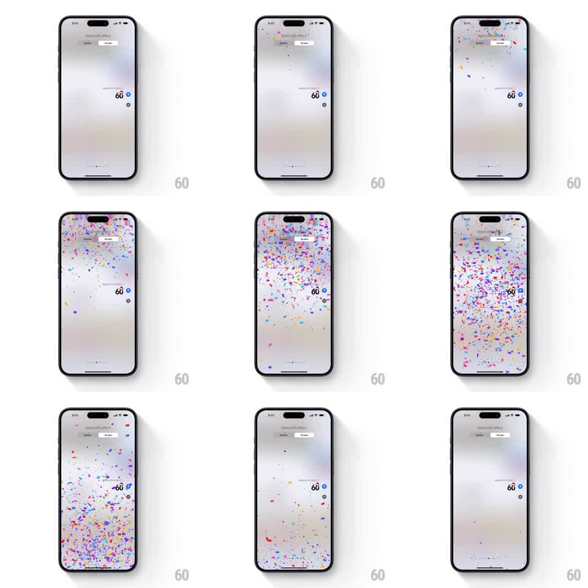

Media
Frame-by-frame

Rebuild this animation 1:1: Apple Messages' Confetti screen effect - multicolored confetti cannons from the top of the screen, pieces tumbling and fluttering down over the conversation until the last bits settle out.

Rebuild this animation 1:1: Apple Messages' Confetti screen effect - multicolored confetti cannons from the top of the screen, pieces tumbling and fluttering down over the conversation until the last bits settle out. ## Integration Integration: stack-agnostic spec - springs given as stiffness/damping, timed motions as duration + curve; map every value to your framework and animation library of choice. ## Scene The Messages "Send with effect" preview on the normal bright conversation: the sent bubble sits at the right. From the top edge, a burst of confetti sprays outward and rains down - small rectangles and squares in blue, red, yellow, purple, orange, and green - tumbling as they fall past the bubble and thinning until the screen is clean. ## Motion spec Pattern: confetti burst and fall, ~5s total. - Emission: two bursts from the top corners (plus a center stream), each piece launched with outward and downward velocity, 100 to 200 pieces total in the first 800ms. - Each piece falls with gravity plus flutter: horizontal sway (plus/minus 30px sine, random 1 to 2s period) and continuous tumble (rotation on two axes, 2 to 4 revolutions per second). - Pieces are flat quads that foreshorten as they rotate (thin line at 90 degrees), in a bright saturated palette. - Fall speed varies per piece (1.5 to 3s to cross the screen); stragglers keep fluttering near the bottom for a beat. - The effect ends as the last pieces exit the bottom edge; the conversation never dims. ## Calibration - The flutter makes pieces drift sideways as much as they fall - real paper, not rain. - Density peaks early and decays; no continuous stream. ## Reduced motion A single gentle shower of a few pieces fades out. ## Don't miss - Confetti falls in front of everything, including the header tabs and the bubble. - Pieces exit at the bottom - none vanish mid-screen.